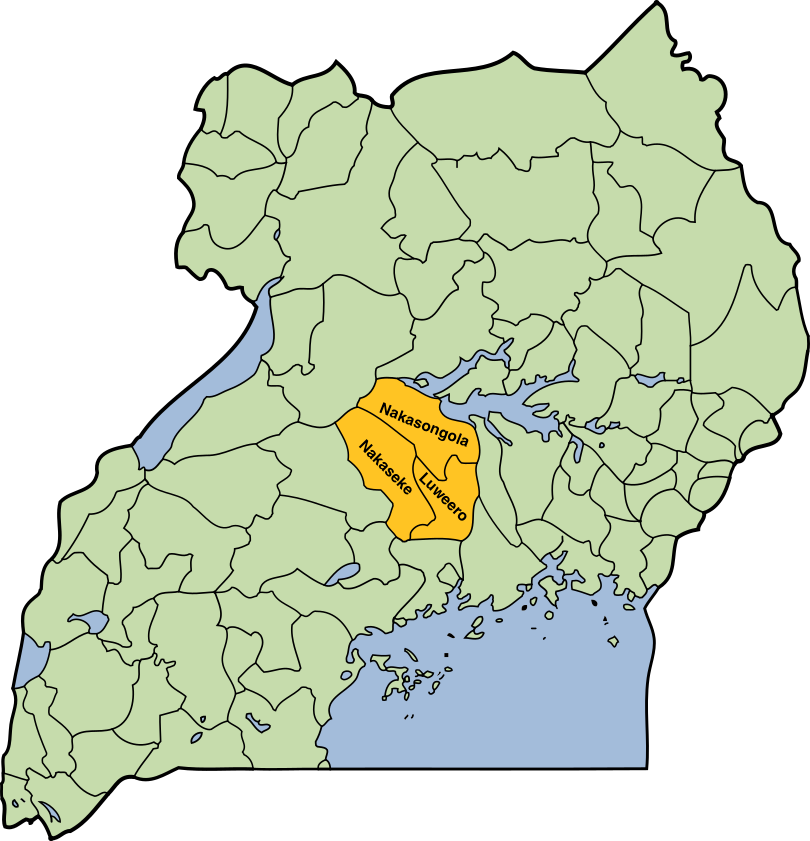

Luwero is commonly known for the 5-year Guerilla war that ravaged the district between 1981–1986, fought between the Uganda National Liberation Army (UNLA) and other rebel groups, mostly the National Resistance Army which later became the Uganda People's Defense Force (UPDF).
Luwero district is located between latitudes 2°05'N and longitudes 33°90'E. It borders Masindi in the north-east, Kiboga in the west, Mukono and Mpigi in the south, and Lake Kyoga in the north. Nakaseke was recently awarded district status, while the new sub-counties comprise Wobusana (renamed Bamunanika), Katikamu, and Nakaseke. It is made up of three counties: Nakaseke, Bamunanika, and Katikamu.
Winston Churchill coined the nickname “The Pearl of Africa” in 1908, to convey the beauty, variety, and natural wealth of the land. Since then, Uganda has grown into one of Africa's most coveted travel sojourns.
Uganda death rate for 2024 was 5.93, a 1.64% decline from 2023.